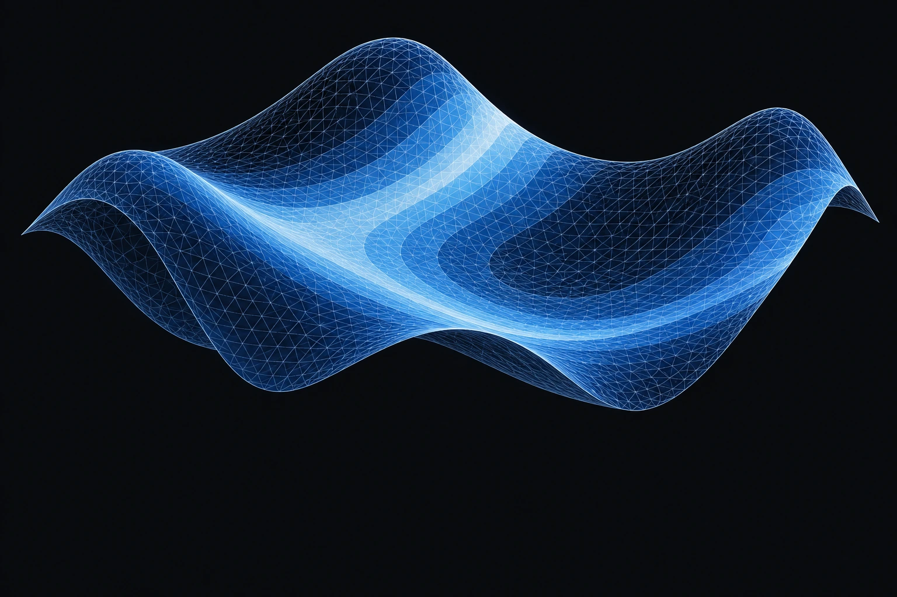

Connecting cardiac electrical activity with computational models.
In progress
Cardiac digital twins
Developing and evaluating models that connect cardiac activation with ECG signals.
Completed
Real-time cardiac simulation
An IQP project exploring finite-state machine models of cardiac electrical propagation.